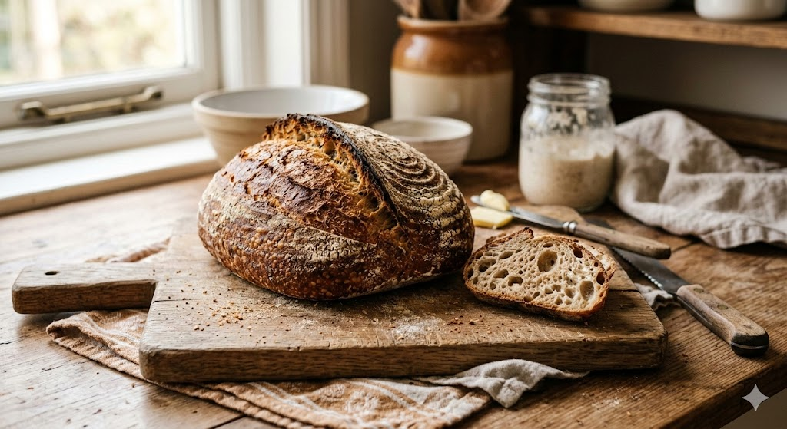
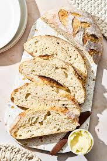

Sourdough adalah jenis roti yang dibuat melalui proses fermentasi alami menggunakan starter atau biang yang terdiri dari campuran tepung dan air yang mengandung ragi liar serta bakteri asam laktat (Lactobacillus). Berbeda dengan roti komersial yang menggunakan ragi instan, sourdough membutuhkan waktu fermentasi yang lebih lama untuk menghasilkan tekstur yang kenyal, kulit roti yang renyah, serta aroma dan rasa asam yang khas. Proses bioteknologi konvensional ini tidak hanya membuat roti lebih awet secara alami karena penurunan pH adonan, tetapi juga meningkatkan nilai gizi dan membuat roti lebih mudah dicerna oleh tubuh karena pemecahan gluten serta asam fitat selama masa inkubasi.

Penelitian ini dirancang untuk menganalisis dan membandingkan karakteristik fisik serta kimiawi dari sourdough yang diproduksi dengan penambahan dua jenis ekstrak buah yang berbeda, yaitu buah nanas dan buah naga. Fokus utama dari proyek ini adalah untuk memahami bagaimana perbedaan sifat alami buah memengaruhi parameter kualitas sourdough pasca-fermentasi.
Membuat sourdough dimulai dengan membuat starter (ragi alami) dari campuran tepung dan air yang didiamkan selama beberapa hari hingga bergelembung, lalu campurkan sebagian starter tersebut dengan tepung terigu, air, dan garam hingga membentuk adonan. Setelah itu, lakukan proses folding (melipat adonan) secara berkala selama fermentasi awal agar teksturnya elastis, diamkan hingga mengembang (bulk fermentation), bentuk adonan menjadi bulat, dan simpan di lemari es semalaman untuk memperkuat rasa. Terakhir, panggang adonan di dalam panci tertutup (Dutch oven) pada suhu sekitar 230°C agar kulitnya renyah dan bagian dalamnya lembut berongga dengan aroma asam yang khas.
